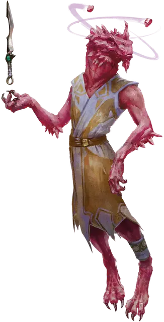

Драконорождённый Сардиора
Dragonborn of Sardior
Средний Гуманоид, нейтральный

Класс Доспеха 17 (ментальная защита)
Хиты 75 (10к8 + 30)
Скорость 30 футов, летая 30 футов (парит)
| мод | спас | ||
|---|---|---|---|
| СИЛ | 14 | +2 | +2 |
| ЛОВ | 16 | +3 | +3 |
| ТЕЛ | 17 | +3 | +6 |
| мод | спас | ||
|---|---|---|---|
| ИНТ | 18 | +4 | +7 |
| МДР | 14 | +2 | +5 |
| ХАР | 12 | +1 | +4 |
Навыки Восприятие +5, История +7, Магия +7
Сопротивление урону психическая энергия
Иммунитет к состояниям испуг
Чувства пассивное Восприятие 15
Языки Общий, Драконий
Опасность 6 (2300 опыта)
Бонус мастерства +3
Особенности
Легендарное сопротивление (1/день). Если драконорождённый провалит спасбросок, он может вместо этого сделать спасбросок успешным.
Ментальная защита. Пока драконорождённый не носит доспехов, он добавляет свой модификатор Интеллекта к КД (включено в статистику)
Действия
Мультиатака. Драконорождённый совершает три атаки Клинком Разума.
Клинок разума. Рукопашная или Дальнобойная атака оружием: +7 к попаданию, досягаемость 5 фт. или дистанция 20/60 фт., одна цель. Попадание: 6 (1к4+4) колющего урона плюс 10 (3к6) урона психической энергией.
Использование заклинаний (псионика). Драконорожденный накладывает одно из следующих заклинаний, они не требуют компонентов заклинания и использует Интеллект в качестве базовой характеристики (Сл спасброска от заклинания 15, +7 к попаданию атаками заклинаниями):
• 1/день каждое: длань Бигби [bigby’s hand], гипнотический узор [hypnotic pattern], телекинез [telekinesis].
Знойное дыхание (перезарядка 6). Драконорожденный выдыхает волну интенсивного тепла в 30-футовом конусе. Все существа в этой области должны совершить спасбросок Телосложения Сл 14, получая 27 (6к8) урона огнём в случае провала или половину этого урона при успехе. Металлические предметы в этой области раскаляются докрасна до конца следующего хода драконорожденного. Любое существо, находящееся в физическом контакте с нагретым предметом в начале своего хода, должно совершить спасбросок Телосложения Сл 14. При провале существо получает 9 (2к8) урона огнём и получает помеху на броски атаки до начала следующего хода.
Описание
Говорят, что Сардиор погиб при разрушении Первого мира. Но многие верят, что божественная сущность Сардиора живет в каждом самоцветном драконе. Эта философия занимает центральное место в учении драконорожденных чемпионов Сардиора, которые владеют псионической силой на службе своему таинственному делу. Многие из этих чемпионов связаны с Наследниками Первого мира.
Чемпионы Сардиора используют телекинетическую силу, чтобы перемещать своих врагов и даже переноситься по воздуху. Считается, что их оружие дыхания, тепловой взрыв, является отголоском давно потерянного дыхания Сардиора.
Драконорождённые чемпионы. Связь между драконорожденными и их драконьими предками проявляется по-разному. Некоторые драконорожденные отождествляют себя с определенным видом драконов и пытаются подражать поступкам и поведению таких драконов. Другие считают свое драконье наследие — цветное, металлическое или самоцветное — чем-то вроде большой расширенной семьи. Но для чемпионов-драконорожденных эта связь является как духовной, так и биологической, и они посвящают себя своему божественному предку. Драконорожденные чемпионы продвигают дело своего бога-дракона среди драконьих существ и других народов.